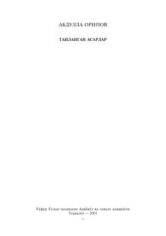

AOO'zbekiston xalq shoiri Abdulla Oripovning sara she'rlar to'plami.
Ushbu kitob atoqli o'zbek shoiri Abdulla Oripovning sara she'rlarini o'z ichiga oladi. Shoir ijodiga xos falsafiy teranlik, vatanparvarlik va insoniy tuyg'ular tarannum etilgan she'rlar o'rin olgan.